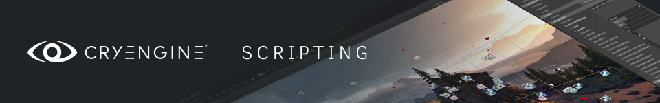
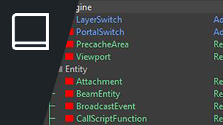
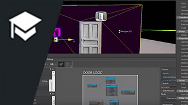

Урок по написанию сценариев
В этом уроке по написанию сценариев мы научимся отображать переменные на экране во время игры.! Изучив эти шаги и выполнив задание, вы сможете перейти к более сложным темам, например, написать письмо в XML или создать свои собственные узлы Flow Graph для дополнительной игровой механики.

Справочник по сценариям
Есть два способа визуального создания сценариев внутри CRYENGINE V: инструмент Flow Graph, а также новый экспериментальный инструмент, известный как Schematyc, для создания сценариев сущностей. В связи с этим мы связали справочную документацию для обоих этих наборов инструментов, чтобы помочь вам и познакомить вас с обоими интерфейсами.

Рис: Список узлов FG
Учебники по написанию сценариев
Большинство учебных пособий, содержащихся в серии видео, основаны на простой логике, которую вы можете выполнить для взаимодействия или печати текста в вашей сцене. В предоставленных видеоуроках конкретно рассматривается печать игровых часов и размещение данных для извлечения.

Рис. Урок по интерактивным объектам